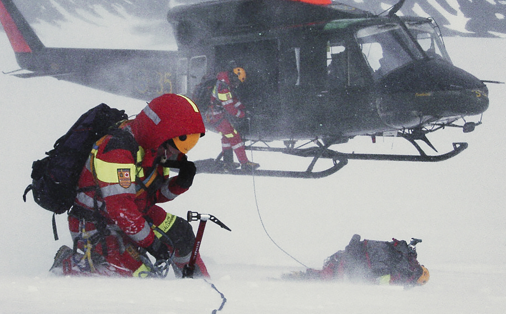

TODAY'S TOP STORY

AVALANCHE IN TURKEY
BY SUZAN FRASER
5 FEBRUARY 2020, 07:22
An avalanche slammed into a mountain road in eastern Turkey on Wednesday, wiping out a huge team of rescue workers sent to find people missing in an earlier avalanche. Officials said 33 emergency workers were killed, 53 were injured and others are still buried under the snow.